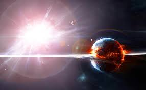

|

Süpernova Patlamaları
Süpernova, bir yıldızın yaşamının son evresinde meydana gelen muazzam bir patlamadır. Bu olay, evrendeki en güçlü ve en parlak patlamalardan biridir.
Birkaç saniye içinde, süpernova patlaması bir yıldızın tüm ömrü boyunca yaydığı enerjiden daha fazlasını açığa çıkarabilir.
Süpernova genellikle büyük kütleli yıldızların ölümüyle gerçekleşir. Yıldız çekirdeğindeki nükleer yakıt tükendiğinde artık füzyon reaksiyonlarını
sürdüremez. Bu durumda çekirdek, kendi kütle çekimine karşı koyamaz ve aniden çöker. Çekirdeğin çökmesiyle yıldızın dış katmanları şiddetle
uzaya fırlatılır; bu devasa patlamaya süpernova denir.
Süpernova sırasında sıcaklık milyonlarca dereceye ulaşır ve uzaya büyük miktarda demir, altın, gümüş, oksijen gibi ağır elementler saçılır.
Bu elementler daha sonra yeni yıldızların, gezegenlerin ve hatta yaşamın yapı taşlarını oluşturur. Yani biz de dahil olmak üzere evrendeki her
şeyin kökeninde, bir zamanlar patlamış yıldızların kalıntıları vardır.
Süpernova olayları iki ana türde gerçekleşir:
Tip I süpernova, bir beyaz cücenin yakınındaki başka bir yıldızdan madde çekmesiyle belirli bir kütleye ulaştığında meydana gelir.
Tip II süpernova ise büyük kütleli yıldızların çekirdek çökmesiyle oluşur.
Süpernova patlamasından geriye kalan çekirdek, yıldızın kütlesine bağlı olarak nötron yıldızı veya karadelik haline gelir.
Kısacası, süpernova bir son değil, evrensel döngünün devamıdır. Bir yıldız ölürken uzaya yaşamın hammaddesini bırakır ve evrenin yeniden doğuşuna katkı
sağlar.
|